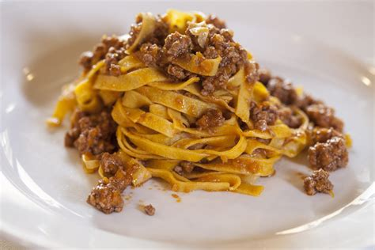

Ragu alla Bolognese

Ingredients
- 1/2 tbsp Olive Oil
- 300 g Ground Beef
- 150 g Pancetta
- 50 g Carrot
- 50 g Celery
- 50 g Onion
- 1 cube Chicken Stock
- 120 ml White Wine
- 300 g Tomato Passata
- 1 cup (240 ml) full fat milk
- 500 g Pasta
Steps
- Chop Celery, Carrot and Onion
- Cook the Carrots for 5 min on an oiled pan
- Cook the pasta
- Put the rest of chopped vegetables in the pan
- Cook untill soft
- Put the cooked vegetables aside
- In an another pan, fry the meat in a little bit of olive oil
- Deglaze the meat with white wine, slowly
- Mix in the vegetables
- Add the tomato passata with a cube of chicken stock
- Mix everything together
- Season and cook on low fire for at least 1 hour
- Serve